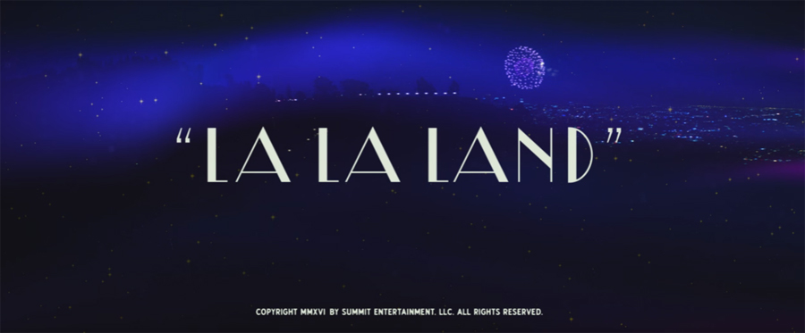
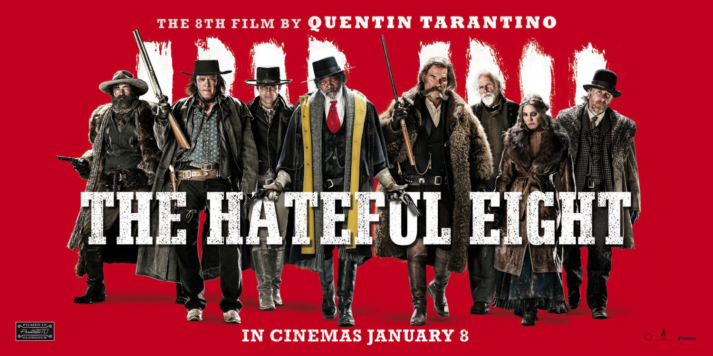
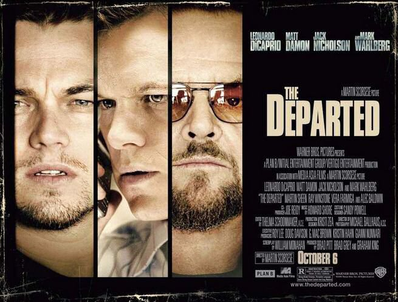

Select a genre
Comedy
- La La Land
La La Land is a 2016 American romantic musical comedy-drama film written and directed by Damien Chazelle and starring Ryan Gosling and Emma Stone as a musician and an aspiring actress who meet and fall in love in Los Angeles. The film's title refers both to the city of Los Angeles and to the idiom for being out of touch with reality.Chazelle wrote the screenplay in 2010 but did not find a studio willing to finance the production in keeping with his design. Following the success of his 2014 film Whiplash, the project was eventually picked up by Summit Entertainment. La La Land premiered at the Venice Film Festival on August 31, 2016 and was released in the United States on December 9, 2016. It has grossed $173 million worldwide against a production budget of $30 million.La La Land received critical acclaim upon its release and was regarded as one of the best films of 2016. Critics praised Chazelle's screenplay and direction, Gosling and Stone's performances, Justin Hurwitz's musical score, and the film's musical numbers. At the 89th Academy Awards, the film was nominated for a record-tying fourteen Oscars, including Best Picture, Best Director, Best Actor (Gosling) and Best Actress (Stone). The film also set a record for the most Golden Globes won in a single show, winning seven awards at the 74th Golden Globe Awards.

Mystery & suspense
- The Hateful Eight
The Hateful Eight is a 2015 American revisionist Western[5] mystery film written and directed by Quentin Tarantino. It stars Samuel L. Jackson, Kurt Russell, Jennifer Jason Leigh, Walton Goggins, Demián Bichir, Tim Roth, Michael Madsen, and Bruce Dern as eight strangers who seek refuge from a blizzard in a stagecoach stopover some time after the American Civil War.
Tarantino announced The Hateful Eight in November 2013, having originally conceived it as a novel and sequel to his previous film Django Unchained (2012). After the script leaked in January 2014, he cancelled the film but announced that he had changed his mind after directing a live reading of the script at the United Artists Theater in Los Angeles. Filming began on December 8, 2014, near Telluride, Colorado. The original score composed by Ennio Morricone, the first for a Tarantino film, was Morricone's first complete Western score in 35 years, and his first score for a high-profile Hollywood production since Brian De Palma's Mission to Mars in 2000.
Distributed by The Weinstein Company in the United States, The Hateful Eight was released on December 25, 2015, in a roadshow release in 70 mm film. It had a wide digital release on December 30, 2015. It received positive reviews, with Leigh receiving considerable praise. For his work on the score, Morricone won the Golden Globe and his first Academy Award for Best Original Score. The film also earned two Academy Award nominations for Best Supporting Actress (Leigh) and Best Cinematography (Robert Richardson).

Thriller
- The Departed
The Departed is a 2006 American crime drama film directed by Martin Scorsese and written by William Monahan. It is a remake of the 2002 Hong Kong film Infernal Affairs. The film stars Leonardo DiCaprio, Matt Damon, Jack Nicholson, and Mark Wahlberg, with Martin Sheen, Ray Winstone, Vera Farmiga, Anthony Anderson, and Alec Baldwin in supporting roles.
The film takes place in Boston. Irish Mob boss Francis "Frank" Costello (Jack Nicholson) plants Colin Sullivan (Matt Damon) as a mole within the Massachusetts State Police; the two characters are loosely based on famous gangster Whitey Bulger and corrupt FBI agent John Connolly, who grew up with Bulger.[3][4] Simultaneously, the police assign undercover state trooper William "Billy" Costigan (Leonardo DiCaprio) to infiltrate Costello's crew. When both sides realize the situation, Sullivan and Costigan both attempt to discover the other's identity before their covers are blown.
The film was a critical and commercial success and won several awards, including four Oscars at the 79th Academy Awards: Best Picture, Best Director (Scorsese), Best Adapted Screenplay, and Best Film Editing.Wahlberg was also nominated for Best Supporting Actor.
